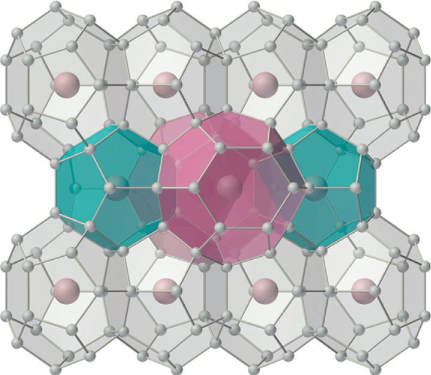
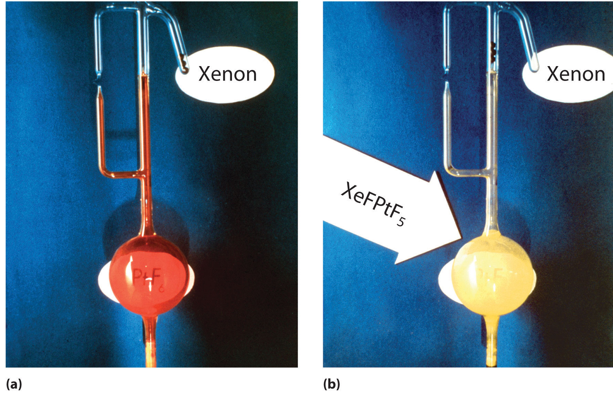

The noble gases were all isolated for the first time within a period of only five years at the end of the 19th century. Their very existence was not suspected until the 18th century, when early work on the composition of air suggested that it contained small amounts of gases in addition to oxygen, nitrogen, carbon dioxide, and water vapor. Helium was the first of the noble gases to be identified, when the existence of this previously unknown element on the sun was demonstrated by new spectral lines seen during a solar eclipse in 1868. (For more information on spectroscopy, see Chapter 6 "The Structure of Atoms".) Actual samples of helium were not obtained until almost 30 years later, however. In the 1890s, the English physicist J. W. Strutt (Lord Rayleigh) carefully measured the density of the gas that remained after he had removed all O2, CO2, and water vapor from air and showed that this residual gas was slightly denser than pure N2 obtained by the thermal decomposition of ammonium nitrite. In 1894, he and the Scottish chemist William Ramsay announced the isolation of a new “substance” (not necessarily a new element) from the residual nitrogen gas. Because they could not force this substance to decompose or react with anything, they named it argon (Ar), from the Greek argos, meaning “lazy.” Because the measured molar mass of argon was 39.9 g/mol, Ramsay speculated that it was a member of a new group of elements located on the right side of the periodic table between the halogens and the alkali metals. He also suggested that these elements should have a preferred valence of 0, intermediate between the +1 of the alkali metals and the −1 of the halogens.
Lord Rayleigh was one of the few members of British higher nobility to be recognized as an outstanding scientist. Throughout his youth, his education was repeatedly interrupted by his frail health, and he was not expected to reach maturity. In 1861 he entered Trinity College, Cambridge, where he excelled at mathematics. A severe attack of rheumatic fever took him abroad, but in 1873 he succeeded to the barony and was compelled to devote his time to the management of his estates. After leaving the entire management to his younger brother, Lord Rayleigh was able to devote his time to science. He was a recipient of honorary science and law degrees from Cambridge University.
Born and educated in Glasgow, Scotland, Ramsay was expected to study for the Calvanist ministry. Instead, he became interested in chemistry while reading about the manufacture of gunpowder. Ramsay earned his PhD in organic chemistry at the University of Tübingen in Germany in 1872. When he returned to England, his interests turned first to physical chemistry and then to inorganic chemistry. He is best known for his work on the oxides of nitrogen and for the discovery of the noble gases with Lord Rayleigh.
In 1895, Ramsey was able to obtain a terrestrial sample of helium for the first time. Then, in a single year (1898), he discovered the next three noble gases: krypton (Kr), from the Greek kryptos, meaning “hidden,” was identified by its orange and green emission lines; neon (Ne), from the Greek neos, meaning “new,” had bright red emission lines; and xenon (Xe), from the Greek xenos, meaning “strange,” had deep blue emission lines. The last noble gas was discovered in 1900 by the German chemist Friedrich Dorn, who was investigating radioactivity in the air around the newly discovered radioactive elements radium and polonium. The element was named radon (Rn), and Ramsay succeeded in obtaining enough radon in 1908 to measure its density (and thus its atomic mass). For their discovery of the noble gases, Rayleigh was awarded the Nobel Prize in Physics and Ramsay the Nobel Prize in Chemistry in 1904. Because helium has the lowest boiling point of any substance known (4.2 K), it is used primarily as a cryogenic liquid. Helium and argon are both much less soluble in water (and therefore in blood) than N2, so scuba divers often use gas mixtures that contain these gases, rather than N2, to minimize the likelihood of the “bends,” the painful and potentially fatal formation of bubbles of N2(g) that can occur when a diver returns to the surface too rapidly.
Fractional distillation of liquid air is the only source of all the noble gases except helium. Although helium is the second most abundant element in the universe (after hydrogen), the helium originally present in Earth’s atmosphere was lost into space long ago because of its low molecular mass and resulting high mean velocity. Natural gas often contains relatively high concentrations of helium (up to 7%), however, and it is the only practical terrestrial source.
The elements of group 18 all have closed-shell valence electron configurations, either ns2np6 or 1s2 for He. Consistent with periodic trends in atomic properties, these elements have high ionization energies that decrease smoothly down the group. From their electron affinities, the data in Table 22.7 "Selected Properties of the Group 18 Elements" indicate that the noble gases are unlikely to form compounds in negative oxidation states. A potent oxidant is needed to oxidize noble gases and form compounds in positive oxidation states. Like the heavier halogens, xenon and perhaps krypton should form covalent compounds with F, O, and possibly Cl, in which they have even formal oxidation states (+2, +4, +6, and possibly +8). These predictions actually summarize the chemistry observed for these elements.
Table 22.7 Selected Properties of the Group 18 Elements
| Property | Helium | Neon | Argon | Krypton | Xenon | Radon |
|---|---|---|---|---|---|---|
| atomic symbol | He | Ne | Ar | Kr | Xe | Rn |
| atomic number | 2 | 10 | 18 | 36 | 54 | 86 |
| atomic mass (amu) | 4.00 | 20.18 | 39.95 | 83.80 | 131.29 | 222 |
| valence electron configuration* | 1s2 | 2s22p6 | 3s23p6 | 4s24p6 | 5s25p6 | 6s26p6 |
| triple point/boiling point (°C) | —/−269† | −249 (at 43 kPa)/−246 | −189 (at 69 kPa)/−189 | −157/−153 | −112 (at 81.6 kPa)/−108 | −71/−62 |
| density (g/L) at 25°C | 0.16 | 0.83 | 1.63 | 3.43 | 5.37 | 9.07 |
| atomic radius (pm) | 31 | 38 | 71 | 88 | 108 | 120 |
| first ionization energy (kJ/mol) | 2372 | 2081 | 1521 | 1351 | 1170 | 1037 |
| normal oxidation state(s) | 0 | 0 | 0 | 0 (+2) | 0 (+2, +4, +6, +8) | 0 (+2) |
| electron affinity (kJ/mol) | > 0 | > 0 | > 0 | > 0 | > 0 | > 0 |
| electronegativity | — | — | — | — | 2.6 | — |
| product of reaction with O2 | none | none | none | none | none | none |
| type of oxide | — | — | — | — | acidic | — |
| product of reaction with N2 | none | none | none | none | none | none |
| product of reaction with X2 | none | none | none | KrF2 | XeF2, XeF4, XeF6 | RnF2 |
| product of reaction with H2 | none | none | none | none | none | none |
| *The configuration shown does not include filled d and f subshells. | ||||||
| †This is the normal boiling point of He. Solid He does not exist at 1 atm pressure, so no melting point can be given. | ||||||
For many years, it was thought that the only compounds the noble gases could form were clathrates. Clathrates are solid compounds in which a gas, the guest, occupies holes in a lattice formed by a less volatile, chemically dissimilar substance, the host (Figure 22.16 "The Structure of Xenon Hydrate, a Clathrate"). Because clathrate formation does not involve the formation of chemical bonds between the guest (Xe) and the host molecules (H2O, in the case of xenon hydrate), the guest molecules are immediately released when the clathrate is melted or dissolved. In addition to the noble gases, many other species form stable clathrates. One of the most interesting is methane hydrate, large deposits of which occur naturally at the bottom of the oceans. It is estimated that the amount of methane in such deposits could have a major impact on the world’s energy needs later in this century.
Figure 22.16 The Structure of Xenon Hydrate, a Clathrate
Small gaseous atoms or molecules such as Xe or CH4 can occupy cavities in a lattice of hydrogen-bonded water molecules to produce a stable structure with a fixed stoichiometry (in this case, Xe·5.75H2O). (The hydrogen atoms of the water molecules have been omitted for clarity.) Warming the solid hydrate or decreasing the pressure of the gas causes it to collapse, with the evolution of gas and the formation of liquid water.

“Burning snowballs.” Like xenon, methane (CH4) forms a crystalline clathrate with water: methane hydrate. When the solid is warmed, methane is released and can be ignited to give what appears to be burning snow.
The widely held belief in the intrinsic lack of reactivity of the noble gases was challenged when Neil Bartlett, a British professor of chemistry at the University of British Columbia, showed that PtF6, a compound used in the Manhattan Project, could oxidize O2. Because the ionization energy of xenon (1170 kJ/mol) is actually lower than that of O2, Bartlett recognized that PtF6 should also be able to oxidize xenon. When he mixed colorless xenon gas with deep red PtF6 vapor, yellow-orange crystals immediately formed (Figure 22.17 "The Synthesis of the First Chemical Compound of Xenon"). Although Bartlett initially postulated that they were Xe+PtF6−, it is now generally agreed that the reaction also involves the transfer of a fluorine atom to xenon to give the XeF+ ion:
Equation 22.46
Xe(g) + PtF6(g) → [XeF+][PtF5−](s)Figure 22.17 The Synthesis of the First Chemical Compound of Xenon
(a) An apparatus containing platinum hexafluoride, the red vapor at the bottom left, and xenon, the colorless gas in the small tube at the upper right. (b) When the glass seal separating the two gases is broken and the gases are allowed to mix, a bright yellow solid is formed, which is best described as XeF+PtF5−.
Subsequent work showed that xenon reacts directly with fluorine under relatively mild conditions to give XeF2, XeF4, or XeF6, depending on conditions; one such reaction is as follows:
Equation 22.47
Xe(g) + 2F2(g) → XeF4(s)The ionization energies of helium, neon, and argon are so high (Table 22.7 "Selected Properties of the Group 18 Elements") that no stable compounds of these elements are known. The ionization energies of krypton and xenon are lower but still very high; consequently only highly electronegative elements (F, O, and Cl) can form stable compounds with xenon and krypton without being oxidized themselves. Xenon reacts directly with only two elements: F2 and Cl2. Although XeCl2 and KrF2 can be prepared directly from the elements, they are substantially less stable than the xenon fluorides.
The ionization energies of helium, neon, and argon are so high that no stable compounds of these elements are known.
Because halides of the noble gases are powerful oxidants and fluorinating agents, they decompose rapidly after contact with trace amounts of water, and they react violently with organic compounds or other reductants. The xenon fluorides are also Lewis acids; they react with the fluoride ion, the only Lewis base that is not oxidized immediately on contact, to form anionic complexes. For example, reacting cesium fluoride with XeF6 produces CsXeF7, which gives Cs2XeF8 when heated:
Equation 22.48
XeF6(s) + CsF(s) → CsXeF7(s)Equation 22.49
The XeF82− ion contains eight-coordinate xenon and has the square antiprismatic structure shown here, which is essentially identical to that of the IF8− ion. Cs2XeF8 is surprisingly stable for a polyatomic ion that contains xenon in the +6 oxidation state, decomposing only at temperatures greater than 300°C. Major factors in the stability of Cs2XeF8 are almost certainly the formation of a stable ionic lattice and the high coordination number of xenon, which protects the central atom from attack by other species. (Recall from Section 22.4 "The Elements of Group 16 (The Chalcogens)" that this latter effect is responsible for the extreme stability of SF6.)
For a previously “inert” gas, xenon has a surprisingly high affinity for oxygen, presumably because of π bonding between O and Xe. Consequently, xenon forms an extensive series of oxides and oxoanion salts. For example, hydrolysis of either XeF4 or XeF6 produces XeO3, an explosive white solid:
Equation 22.50
XeF6(aq) + 3H2O(l) → XeO3(aq) + 6HF(aq)Treating a solution of XeO3 with ozone, a strong oxidant, results in further oxidation of xenon to give either XeO4, a colorless, explosive gas, or the surprisingly stable perxenate ion (XeO64−), both of which contain xenon in its highest possible oxidation state (+8). The chemistry of the xenon halides and oxides is best understood by analogy to the corresponding compounds of iodine. For example, XeO3 is isoelectronic with the iodate ion (IO3−), and XeF82− is isoelectronic with the IF8− ion.
Xenon has a high affinity for both fluorine and oxygen.
Because the ionization energy of radon is less than that of xenon, in principle radon should be able to form an even greater variety of chemical compounds than xenon. Unfortunately, however, radon is so radioactive that its chemistry has not been extensively explored.
On a virtual planet similar to Earth, at least one isotope of radon is not radioactive. A scientist explored its chemistry and presented her major conclusions in a trailblazing paper on radon compounds, focusing on the kinds of compounds formed and their stoichiometries. Based on periodic trends, how did she summarize the chemistry of radon?
Given: nonradioactive isotope of radon
Asked for: summary of its chemistry
Strategy:
Based on the position of radon in the periodic table and periodic trends in atomic properties, thermodynamics, and kinetics, predict the most likely reactions and compounds of radon.
Solution:
We expect radon to be significantly easier to oxidize than xenon. Based on its position in the periodic table, however, we also expect its bonds to other atoms to be weaker than those formed by xenon. Radon should be more difficult to oxidize to its highest possible oxidation state (+8) than xenon because of the inert-pair effect. Consequently, radon should form an extensive series of fluorides, including RnF2, RnF4, RnF6, and possibly RnF8 (due to its large radius). The ion RnF82− should also exist. We expect radon to form a series of oxides similar to those of xenon, including RnO3 and possibly RnO4. The biggest surprise in radon chemistry is likely to be the existence of stable chlorides, such as RnCl2 and possibly even RnCl4.
Exercise
Predict the stoichiometry of the product formed by reacting XeF6 with a 1:1 stoichiometric amount of KF and propose a reasonable structure for the anion.
Answer: KXeF7; the xenon atom in XeF7− has 16 valence electrons, which according to the valence-shell electron-pair repulsion model could give either a square antiprismatic structure with one fluorine atom missing or a pentagonal bipyramid if the 5s2 electrons behave like an inert pair that does not participate in bonding.
The noble gases have a closed-shell valence electron configuration. The ionization energies of the noble gases decrease with increasing atomic number. Only highly electronegative elements can form stable compounds with the noble gases in positive oxidation states without being oxidized themselves. Xenon has a high affinity for both fluorine and oxygen, which form stable compounds that contain xenon in even oxidation states up to +8.
The chemistry of the noble gases is largely dictated by a balance between two competing properties. What are these properties? How do they affect the reactivity of these elements?
Of the group 18 elements, only krypton, xenon, and radon form stable compounds with other atoms and then only with very electronegative elements. Why?
Give the type of hybrid orbitals used by xenon in each species.
Which element is the least metallic—B, Ga, Tl, Pb, Ne, or Ge?
Of Br, N, Ar, Bi, Se, He, and S, which would you expect to form positive ions most easily? negative ions most easily?
Of BCl3, BCl4−, CH4, H3N·BF3, PCl3, PCl5, XeO3, H2O, and F−, which species do you expect to be
Of HCl, HClO4, HBr, H2S, HF, KrF2, and PH3, which is the strongest acid?
Of CF4, NH3, NF3, H2O, OF2, SiF4, H2S, XeF4, and SiH4, which is the strongest base?
Write a balanced chemical equation showing how you would prepare each compound from its elements and other common compounds.
Write a balanced chemical equation showing how you would make each compound.
In an effort to synthesize XeF6, a chemist passed fluorine gas through a glass tube containing xenon gas. However, the product was not the one expected. What was the actual product?
Write a balanced chemical equation to describe the reaction of each species with water.
Using heavy water (D2O) as the source of deuterium, how could you prepare each compound?
Predict the product(s) of each reaction and write a balanced chemical equation for each reaction.
SiF4; SiO2(s) + 2F2(g) → SiF4(l) + 2O2(g)
2Na(s) + 2D2O(l) → D2(g) + 2NaOD(aq)
2Li(s) + D2(g) → 2LiD(s)
4LiD(s) + AlCl3(soln) → LiAlD4(s) + 3LiCl(soln)